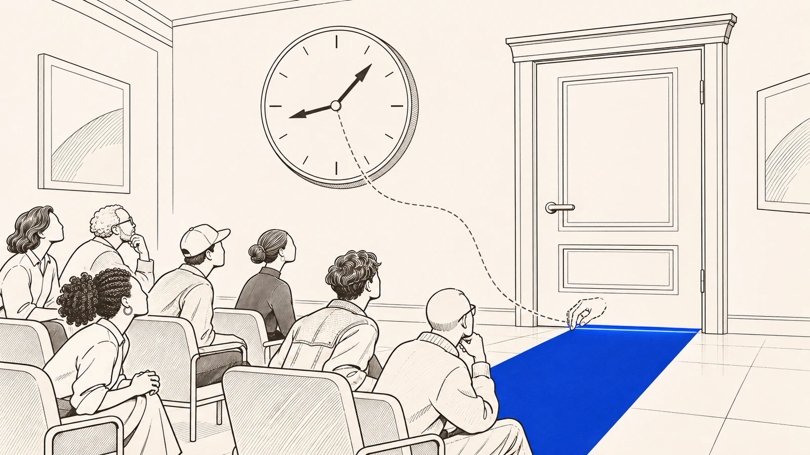

Why does waiting for the next release also cost you?Hypercuratorial anticipation
Before something arrives, the platform is already selling. It announces what is coming, what will disappear, what returns for a limited time and what will become a big event. It releases short trailers, shows the year's roadmap and sets dates.
As a result, expectation comes to count as if it were already here. It becomes a reason to stay, to spend and not to leave, because leaving now would mean missing what is about to arrive. When you buy something under this regime, you are not buying just an item. You are entering a flow, where what matters is also being able to keep counting inside it as the calendar moves on.
Where it comes from
Hypercuratorial anticipation designates an economic-semiological technique by which the platform produces a consumable future through continuous curation, defining what will come, what will disappear, what will return and what will be elevated to the status of "event".p. 313
PT
Antecipação hipercuratorial designa uma técnica econômico-semiológica pela qual a plataforma produz futuro consumível por curadoria contínua, definindo o que virá, o que desaparecerá, o que retornará e o que será elevado ao estatuto de "evento".
This anticipation is economically relevant for IOCs because it sustains the conversion of expectation into present value, altering the very logic by which the consumer decides and stays.p. 316
PT
Essa antecipação é economicamente relevante para os OIC porque sustenta a conversão da expectativa em valor presente, alterando a própria lógica de decisão e de permanência do consumidor.
When acquiring an immaterial good under this regime, one does not sign on merely to an isolated item, but to a place within a governed flow, in which what “counts” is also the ability to keep counting in the ecosystem as the calendar unfolds.p. 316
PT
Ao adquirir um bem imaterial nesse regime, não se adere apenas a um item isolado, mas a uma inserção dentro de um fluxo governado, no qual o que “vale” é também a capacidade de continuar contando no ecossistema conforme o calendário se desdobra.
Hypercuratorial anticipation
Curation is deciding what will be seen, rewarded and repeated, as a curator does when putting together an exhibition. Here it is so intense, so hyper, that it comes to govern time and to sell the waiting itself. It is not just pretty advertising. It is a way of governing time that turns expectation into a regular way of keeping things valuable. And it makes a promise about the future without giving you, in the same measure, a way to check whether that promise will be kept.
Where it comes from
The platform appears as an instance of private administration that organizes enjoyment through architecture, rules and enforcement, defining access, permanence and visibility. This includes both explicit decisions, such as policies and sanctions, and decisions embedded in design, in curation and in the metrics that select what will be seen, rewarded and reproducedp. 262
PT
A plataforma aparece como instância de administração privada que organiza a fruição por arquitetura, regras e enforcement, definindo acesso, permanência e visibilidade. Isso inclui tanto decisões explícitas, como políticas e sanções, quanto decisões embutidas no design, na curadoria e nas métricas que selecionam o que será visto, premiado e reproduzido
Hypercuratorial anticipation, in this sense, is not a marketing ornament, but a technique for governing time that monetizes expectation as a regular form of maintaining value.p. 316
PT
A antecipação hipercuratorial, nesse sentido, não é ornamento de marketing, mas técnica de governo do tempo que monetiza a expectativa como forma regular de manutenção do valor.
This vulnerability is intensified by practices of hypercuratorial anticipation, through which the platform projects images of performance, reward and future experience without offering, in the same measure, real conditions of verification and control by the consumerp. 34
PT
Essa vulnerabilidade é intensificada por práticas de antecipação hipercuratorial, pelas quais a plataforma projeta imagens de desempenho, recompensa e experiência futura sem oferecer, na mesma medida, condições reais de verificação e controle pelo consumidor

Where it comes from
The present stops being the place of a stabilized delivery and becomes a governed antechamberp. 314
PT
O presente deixa de ser o lugar de uma entrega estabilizada e torna-se uma antecâmara governada
Why does the present become a waiting room?
The present becomes a waiting room. You are always waiting for the next cycle, the next update, the next opportunity. Announcements, previews, roadmaps and seasons deliver the future ahead of time, as if the announcement were already a piece of what was promised.
And the waiting becomes part of what you consume. The platform does not sell only the now. It also sells your staying on while you wait for what is coming.
Where it comes from
The present ceases to be the place of a stabilized delivery and becomes a governed antechamber, in which the promise is renewed by announcements, teasers, roadmaps and “seasons” that function as anticipated delivery on the plane of recognition.p. 314
PT
O presente deixa de ser o lugar de uma entrega estabilizada e torna-se uma antecâmara governada, em que a promessa se renova por anúncios, teasers, roadmaps e “temporadas” que funcionam como entrega antecipada no plano do reconhecimento.
The consumer is kept in continuous readiness for “the next cycle”, “the next update”, “the next opportunity”p. 314
PT
O consumidor é mantido em prontidão contínua para “o próximo ciclo”, “a próxima atualização”, “a próxima oportunidade”
Thus, the platform does not sell only the “now”, since it also sells permanence oriented to the “yet to come”, converting expectation into an asset and transforming waiting into a material component of enjoyment.p. 314
PT
Assim, a plataforma não vende apenas o “agora”, posto que ela também vende a permanência orientada ao “por vir”, convertendo expectativa em ativo e transformando a espera em componente material da fruição.
How does the platform decide the pace of the waiting?
There are four moves. Saying what is coming, what will disappear, what returns and what becomes an event. With them the platform decides the pace of things, what is important at each moment and what you should expect.
The effect is to swap the logic of delivery for the logic of the path. The promise becomes a sequence of stages, so that what you have always seems incomplete without the next cycle. The future does not even need to arrive whole. It only needs to remain credible and mobilizing. This way, delivery can be postponed again and again without looking like failure.
Where it comes from
Hypercuratorial anticipation designates an economic-semiological technique by which the platform produces a consumable future through continuous curation, defining what will come, what will disappear, what will return and what will be elevated to the status of “event”p. 313
PT
Antecipação hipercuratorial designa uma técnica econômico-semiológica pela qual a plataforma produz futuro consumível por curadoria contínua, definindo o que virá, o que desaparecerá, o que retornará e o que será elevado ao estatuto de “evento”
This production governs value itself by deciding rhythms, relevances and expectations within the ecosystemp. 313
PT
Essa produção governa o próprio valor ao decidir ritmos, relevâncias e expectativas no interior do ecossistema
The immediate economic effect is the replacement of the “by delivery” logic with a “by directed trajectory” logic. The promise is always reframed as a succession of stages, events and returns, so that enjoyment becomes structurally incomplete without the next cycle.p. 316
PT
O efeito econômico imediato é a substituição da lógica “por entrega” por uma lógica “por trajetória dirigida”. A promessa é sempre reenquadrada como uma sucessão de etapas, eventos e retornos, de modo que a fruição se torna estruturalmente incompleta sem o ciclo seguinte.
The future need not come about in full; it is enough that it remain credible and mobilizing. Thus, delivery can be continually postponed without appearing to be a failurep. 316
PT
Não é necessário que o futuro se realize integralmente; basta que permaneça crível e mobilizador. Assim, a entrega pode ser continuamente adiada sem parecer falha
What happens when the future becomes the company's calendar?
In announcements about the year's season, a game company presented what it was preparing for the following months as an official sequence of announcements, with a summary, forecasts and links to longer texts. The future stopped being only the players' expectation and became the company's calendar.
The effect is clear. These announcements offer direction and continuity, and this becomes part of the value of keeping an eye on the game. Anyone who stops following feels they will miss out on something.
Where it comes from
Instead of the future appearing as a simple expectation of the consumer, it is produced as an institutional calendar and as a repertoire of signs, with release cuts, schedule forecasts, teasers and updates that become, in practice, part of what sustains permanence and decision.p. 314
PT
Em vez de o futuro aparecer como simples expectativa do consumidor, ele é produzido como calendário institucional e como repertório de sinais, com recortes de lançamento, previsões de cronograma, teasers e atualizações que se tornam, na prática, parte daquilo que sustenta permanência e decisão.
In this register, development announcements function as explicit management of the “to come”, by presenting what is being prepared for the year and condensing announcements in the form of a sequence, with time frames, forecasts and references to more extensive context piecesp. 314
PT
Nesse registro, comunicados de desenvolvimento funcionam como gestão explícita do “por vir”, ao apresentar o que se prepara para o ano e ao condensar anúncios em forma de sequência, com recortes temporais, previsões e remissões para peças mais extensas de contexto
The form matters because it organizes the “to come” as an official sequence of items, offering direction and continuity as part of the value of remaining attentive to the ecosystemp. 314
PT
A forma importa porque organiza o “por vir” como sequência oficial de itens, oferecendo direção e continuidade como parte do valor de permanecer atento ao ecossistema
Can a promise about the future be checked?
A promise about the future almost never comes with a way to check whether it will be kept. You pay for the image of something you cannot yet verify.
That is why this expectation cannot be dismissed as advertising hype when it was precisely what led you to buy. If the platform promised value, rarity, performance or advantage, and later downgrades it all by criteria no one sees, the frustration is not a mere annoyance. It may be a sign that the delivery itself failed, and the advertising becomes part of the offer.
Where it comes from
[...] practices of hypercuratorial anticipation, through which the platform projects images of performance, reward and future experience without offering, in the same measure, real conditions of verification and control by the consumer.p. 34
PT
[...] práticas de antecipação hipercuratorial, pelas quais a plataforma projeta imagens de desempenho, recompensa e experiência futura sem oferecer, na mesma medida, condições reais de verificação e controle pelo consumidor.
The second is functional value equivalence, because the expectation produced by hypercuratorial anticipation cannot be dismissed as promotional puffery when it served precisely to induce the acquisition and shape the understanding of the objectp. 634
PT
O segundo é a equivalência de valor funcional, porque a expectativa produzida pela antecipação hipercuratorial não pode ser descartada como fumaça promocional quando serviu precisamente para induzir a aquisição e moldar a compreensão do objeto
If the platform promises a curated experience of value, rarity, performance or advantage, and later rebalances or downgrades it under opaque criteria, the frustration is not a mere annoyance.p. 634
PT
Se a plataforma promete uma experiência curada de valor, raridade, desempenho ou vantagem, e depois a reequilibra ou a rebaixa sob critérios opacos, a frustração não é mero dissabor.
advertising will materially form part of the offerp. 744-745
PT
a publicidade integrará materialmente a oferta
Does every rumor among fans count?
Not every bit of buzz among fans counts here. Spontaneous rumor, community talk and speculation are just that, talk.
The question arises when the rumor stops being spontaneous noise and starts working as part of the management of expectation, desire and waiting that the platform administers or exploits. At that point it is no longer outside the problem.
Where it comes from
[...] control of the IOC must also reach the informalized zones of expectation management, whenever they cease to be spontaneous community noise and come to form a functional part of the governance of desire, waiting and consumption planning.p. 787
PT
[...] o controle do OIC precisa alcançar também as zonas informalizadas de administração da expectativa, sempre que elas deixem de ser ruído comunitário espontâneo e passem a integrar, funcionalmente, a governança do desejo, da espera e do planejamento de consumo.
The rumor, when it stabilizes as a social infrastructure of pre-enjoyment, is no longer outside the legal problem.p. 787
PT
O rumor, quando se estabiliza como infraestrutura social de pré-fruição, já não está fora do problema jurídico.
What can you demand?
What was promised has to be deliveredWhat was promised has to be delivered
- When does advertising become part of the offer?
When the purchase comes after careful preparation. It may be a countdown, a promise of exclusivity, a warning that it will run out, a status signal or the suggestion that one item is worth as much as another. In these cases, advertising stops being just advertising and becomes part of the offer itself.
- What does the announcement oblige the platform to deliver?
The platform must make what was advertised match what is delivered. The promise, the advertised value and the costs that did not show up have to match the experience you get, including after the platform changes the game.
- How do you compare the promise with what was delivered?
It helps to show what the sales environment was like, what advertising there was, what was highlighted and how the item was presented. It also helps to compare what happened afterwards with what was promised.
- What do you ask for when the promise is not kept?
You can ask for the offer to be corrected and honored, for what you lost to be restored and for the misleading communication to stop. In some cases, you can ask for sales strategies that are incompatible with what is really delivered to be struck down. Depending on the case, the law can treat this as misleading or abusive advertising, or as an offer that binds whoever advertised it.
- Is pushy advertising a problem in itself?
What counts is not whether the advertising is lively or pushy. It is the relationship between what was presented before and what you were able to use afterwards.
Where it comes from
Whenever enjoyment is preceded by curated cycles of anticipation, promise, suggested scarcity, symbolic distinction or insinuated equivalences, advertising will materially be part of the offer.p. 744-745
PT
Sempre que a fruição for precedida por ciclos curados de antecipação, promessa, escassez sugerida, distinção simbólica ou equivalências insinuadas, a publicidade integrará materialmente a oferta.
The corresponding supply duty is to ensure correspondence between promise, announced value, hidden costs and the experience actually made available under managed mutability.p. 745
PT
O dever de fornecimento correspondente é o de assegurar correspondência entre promessa, valor anunciado, custos ocultados e experiência efetivamente disponibilizada sob mutabilidade administrada.
The minimum required proof involves reconstruction of the promotional environment, of the communication pieces, of the symbolic saliences, of the context of presentation of the object and of the relationship between prior promise and later enjoyment.p. 745
PT
A prova mínima exigível envolve reconstrução do ambiente promocional, das peças de comunicação, das saliências simbólicas, do contexto de apresentação do objeto e da relação entre promessa antecedente e fruição posterior.
The legal qualification may fall under misleading or abusive advertising, binding offer, abusive practice through managed ambiguityp. 745
PT
A qualificação jurídica poderá recair em publicidade enganosa ou abusiva, oferta vinculante, prática abusiva por ambiguidade administrada
The possible institutional consequence covers correction of the offer, functional restoration, injunctive relief over the communication and, depending on the case, invalidation of promotional strategies incompatible with the real experience delivered.p. 745
PT
A consequência institucional possível abrange correção da oferta, recomposição funcional, tutela inibitória sobre a comunicação e, conforme o caso, invalidação de estratégias promocionais incompatíveis com a experiência real entregue.
Where on the Path does it matter most?
If the future has already been sold, who answers when it does not arrive as promised?
What is hypercuratorial anticipation?
It is a technique by which the platform produces a consumable future through continuous curation. It defines what will come, what will disappear, what will return and what will be treated as an event. It projects images of performance, reward and future experience without giving the consumer, in the same measure, real conditions of verification and control.
Passage already quoted abovep. 313
Where it comes from
Why does it matter to the regime?
It is not a marketing ornament. It is a technique for governing time, which monetizes expectation as a regular form of maintaining value and changes the logic by which the consumer decides and stays. This conversion of expectation into present value is what makes it economically relevant for immaterial objects of consumption.
Where it comes from
Hypercuratorial anticipation, in this sense, is not a marketing ornament, but a technique for governing time that monetizes expectation as a regular form of maintaining value. This anticipation is economically relevant for IOCs because it sustains the conversion of expectation into present value, altering the very logic by which the consumer decides and stays.p. 316
PT
A antecipação hipercuratorial, nesse sentido, não é ornamento de marketing, mas técnica de governo do tempo que monetiza a expectativa como forma regular de manutenção do valor. Essa antecipação é economicamente relevante para os OIC porque sustenta a conversão da expectativa em valor presente, alterando a própria lógica de decisão e de permanência do consumidor.
How far does control reach?
Control may reach the informal zones of expectation management, such as rumors, whenever they cease to be spontaneous community noise and come to form a functional part of the governance of desire, waiting and consumption planning.
Where it comes from
In the situations
Where can you study it in depth?
In the chapter Information, advertising and anticipation, on the jurist's path.
Concept
Hypercuratorial anticipation
Function in the regime
Reads governed expectationp. 800.
What it is not
Pending. I did not find a general negative criterion for this concept like those the thesis offers for the others. The closest one deals with extending it to rumors.
Where it lives in the thesis
- 4.1.4
- where it originates. Then 6.2.5
- 7.1.1.4 (p. 725, within the parameter of offer and advertising) and 7.2.7.1
In the three readings
- The regime's pathreads governed expectation
Across the platforms
The platform families in which the concept operates.